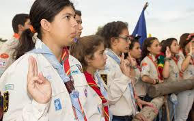
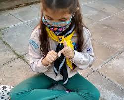
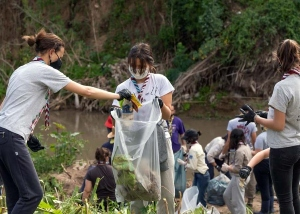

La Misión de nuestro Grupo Scout es contribuir a la educación de los jóvenes, mediante un sistema de valores basado en La Promesa y la Ley Scout, para ayudar a construir un mundo mejor donde las personas se sientan realizadas como individuos y jueguen un papel constructivo en la sociedad. El movimiento Scout esta abierto para todas las personas de 7 a 21 años sin importar su raza, etnia o religion.

Protagonistas realizando el saludo.

Beneficiario realizando cabulleria.

Protagonistas haciendo un voluntariado.
Tenemos actividades todos los sabados de 15hs a 18hs en la Escuela Municipal Primaria Republica de Italia.
Si te interesa seguir conociendo mas sobre el movimiento Scout en Argentina, te invitamos a visitar la pagina de Scout de Argentina para seguir informandote.